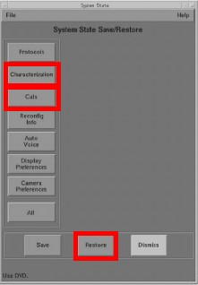

Operating Documentation
Direction 5193574-800, Rev# 22
LightSpeed 7.X Service Methods
Module Version 1.0, Version Date 4/22/10
Operating Documentation |
| Labor: | 1 person; 1 man-hour |
| Tools: |
1. Locate and inventory the system software. |  |
2. Restore System State to restore the system characterization and phantom calibration files to the system. | |
3. Use the system state DVD shipped with the system. Select [Characterization] and [Cals] as the items to restore. |